GANGTOKPrayer flags, MG Marg nights, and a capital in the clouds.
Pedestrian lamps on MG Marg, a ropeway over colored roofs, flower-house humidity, waterfalls under lungta flags, and momos that taste like the altitude. Sikkim’s capital — crisp air, monastery quiet, shared taxis for the lakes.
5Days in the mountains
1650mAbove sea level
∞Prayer flags
A fairy-tale capital. Then the real hills.
Gangtok felt like stepping into clean mountain air and colorful flags. MG Marg at night is the town’s living room; Rumtek and the ropeway pull you outward. I ate momos and thukpa until the cold made sense, and left knowing Sikkim asks foreigners to check permits — and asks everyone to watch the weather.
Where I actually went.
Every tagged stop is on the map. All pins shows them together — tap a name to zoom in. Each popup opens the same place in Google Maps.
The useful layer — MG Marg evenings, ropeway tickets, shared taxis for Tsomgo, and permit notes if your passport is not Indian.
🛍️ MG Marg
Pedestrian main street — shops, lamps, Gandhi statue, evening air without engines. Start here. End here. People-watch like it is a sport.
🙏 Rumtek Monastery
Tibetan Buddhist complex outside town — architecture, meditation halls, a quieter spiritual register than the mall.
🌺 Flower Exhibition Centre
Indoor Himalayan flora, especially when rhododendrons show off. Humid glasshouse contrast to the ridge wind.
🚡 Ropeway
Cable cabin over colored roofs and green ridges. Photography from a moving window. Short ride, long view.
🏞️ Tsomgo Lake
Sacred glacial lake on a day trip — snow peaks, yak photo ops, permits for some nationalities. Dress warmer than Gangtok town.
💦 Waterfalls & flags
Ban Jhakri and similar stops — moss, spray, lungta strings across the sky. Easy add-ons between town and longer lake days.
🛂 Permits for day trips
Tsomgo / higher areas can need paperwork for foreign nationals. Hotels and tour desks often help. Indian citizens usually skip ILP — still carry ID.
Verify
🚡 Ropeway tickets
Buy at the station when queues are short. Cloudy days still show the hillside town; clear days show ridges.
Same day
🚕 Shared taxis
Day trips leave when full. Book through your hotel for Tsomgo packages if you want a fixed pickup.
Shared / package
🤍 No reservation
MG Marg, flower centre hours, most in-town viewpoints. Show up; walk; eat when hungry.
Walk up
🥟 Momos
Steamed or fried — vegetables, chicken, or yak. Mountain comfort food. MG Marg and side lanes keep the steam going.
₹80–200
🍜 Thukpa
Hearty noodle soup for cold evenings. Warming, filling, correct after a ropeway wind.
₹100–250
🫖 Butter tea
Tibetan tea with yak butter and salt. Acquired taste; essential high-altitude ritual if you let it be.
₹40–100
🍛 Gundruk soup
Fermented leafy vegetable soup — tangy Nepali classic. Healthy, warming, less touristy than another pizza.
₹80–150
🥩 Yak meat
Local high-altitude protein when you find it on a menu. Rich, filling, very Sikkim.
₹400–800
🧀 Chhurpi
Hard yak cheese snack — lasts forever, fuels walks. Buy small; your jaw will negotiate.
₹100–300
📅 When to book
2–3 months ahead for March–May and October–December. Book permits and lake transport early. Weather flips fast.
📍 Where
MG Marg — restaurants and lamps. Development Area — quieter, mountain views. Tibet Road — budget and local atmosphere. Homestays beat anonymous mid-rises if you want conversation.
💵 Spend less
Shared taxis for day trips. Markets for momos. Homestays over view premiums if MG Marg is a short walk.
🌸 Mar–May
Peak clarity and flowers. Book early. Excellent for ropeway views and monastery walks.
🌧️ Monsoon
Lush, slippery, landslide risk on lake roads. Soft light for town; hard for Tsomgo plans.
🍂 Oct–Dec
Post-monsoon clarity, festive energy, cold nights. Strong window with spring.
❄️ Jan–Feb
Cold, quieter, possible snow on higher day trips. Pack layers; enjoy empty MG Marg mornings.
🚶 Walk MG Marg
The pedestrian spine. Evening is the point. Daytime for errands and cafés.
Free
🚕 Shared taxis
In-town hops and day trips. Leave when full. Hotel desks arrange reliable drivers for lakes.
Shared
🚡 Ropeway
Not transit — the view product. One ticket, one hillside explained from above.
Ticket
✈️ Getting there
Bagdogra + road into Sikkim, or connections via Siliguri. Pad time for mountain traffic and fog.
IXB + road
Select your citizenship
Where are you currently residing?
Domestic travel within India. Indian citizens do not need a visa for Gangtok — this is not an international entry.
✈️ Domestic trip
VisaNone for Indian citizens traveling inside India
IDAadhaar, passport, or other accepted domestic ID for flights / hotels as required
GatewayBagdogra (IXB) or New Jalpaiguri (NJP), then shared jeep / taxi into the hills
🪪 Carry anyway
Government photo ID
Flight / train tickets to Bagdogra or NJP
Hotel booking confirmation (hotels often ask at check-in)
Cash for shared jeeps — apps are patchy in the hills
💡 Tips
This is India domestic — not a US / Schengen problem
Altitude and winding roads matter more than paperwork
Book early-morning jeeps the night before in peak season
Monsoon can wash out plans — check road status
📍 Local note
Once cleared into India, Gangtok is hill travel — MG Marg on foot, shared taxis for lakes, ropeway for the postcard. Foreign visitors should verify Sikkim Inner Line Permit rules.
Important: Hotel and airline ID rules still apply. Carry a government photo ID even on domestic hops.
Sikkim: Foreign nationals may need an Inner Line Permit (ILP) / protected-area paperwork for parts of Sikkim. Indian citizens generally do not. Rules and checkpoints change — verify current requirements for non-Indians before you travel.
Entering India — not US domestic travel. If you are an Indian citizen on H-1B, H-4, OPT, or similar in the United States, a trip to Gangtok means an international flight into India. Use your Indian passport (or OCI / applicable documents as your status requires). This is not US domestic travel.
✈️ India entry
VisaIndian citizens enter India on an Indian passport — no tourist visa required
OCIIf you hold OCI (or another applicable document), follow current Bureau of Immigration rules
US statusKeep H-1B/H-4/OPT valid for US re-entry; India does not fix US visa stamp problems
🪪 Carry anyway
Indian passport (valid)
US visa stamp / I-797 / EAD as relevant for return to the US
Return ticket to the United States
Hotel bookings in the hills
📄 Re-entering the US
Valid US visa stamp in passport if your category needs one
Do not assume automatic re-entry — check your status before you leave the US
OCI holders who are foreign nationals follow foreign-national entry rules into India
💡 Tips
Bagdogra and NJP are the usual gateways — pad connection time
Shared jeeps leave when full; private taxis cost more
This trip is international immigration into India, then domestic hills travel
Rules change — indianvisaonline.gov.in / BOI for foreigners; passport.gov.in for citizens
Important: Status questions are individual. When in doubt, check Bureau of Immigration / your counsel — not a blog comment thread.
Sikkim: Foreign nationals may need an Inner Line Permit (ILP) / protected-area paperwork for parts of Sikkim. Indian citizens generally do not. Rules and checkpoints change — verify current requirements for non-Indians before you travel.
Indian visa / eVisa required. US citizens need a valid Indian visa or eVisa before flying to India. Gangtok is not US domestic travel.
📅 eVisa / visa
WhatIndian eVisa (tourist) or visa from an Indian consulate — confirm eligibility on the official portal
Applyindianvisaonline.gov.in (official eVisa) or a consulate for stamp visas
PassportValid; check remaining validity and blank pages before you apply
EntryImmigration decides at the airport — a visa is not a guarantee of entry
🛂 Entry checklist
Valid US passport
Approved eVisa / visa printout or digital copy
Return / onward ticket
Hotel proof for the hills
Enough funds for the stay
💡 Travel tips
Apply before you buy nonrefundable hill transport
Bagdogra (IXB) is the usual air gateway
Carry warm layers for early mountain mornings
Verify current eVisa categories on the official site only
📍 Local note
Once cleared into India, Gangtok is hill travel — MG Marg on foot, shared taxis for lakes, ropeway for the postcard. Foreign visitors should verify Sikkim Inner Line Permit rules.
Note: Visa rules change. Check indianvisaonline.gov.in and travel.state.gov before you book.
Sikkim: Foreign nationals may need an Inner Line Permit (ILP) / protected-area paperwork for parts of Sikkim. Indian citizens generally do not. Rules and checkpoints change — verify current requirements for non-Indians before you travel.
What stayed on the roll.
Eight chapters from the diary — MG Marg lamps, a flower house, ridge paths, prayer-flag waterfalls, a ropeway cabin, a plate with steam, Namchi’s stadium green, and moss forests on the climb.
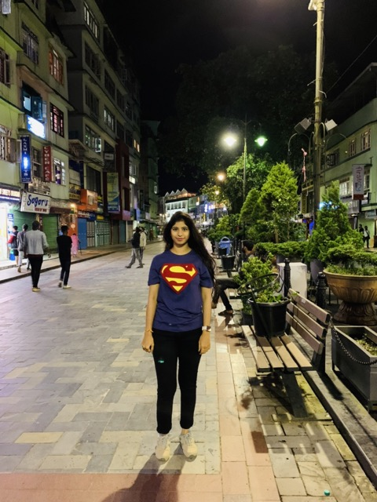
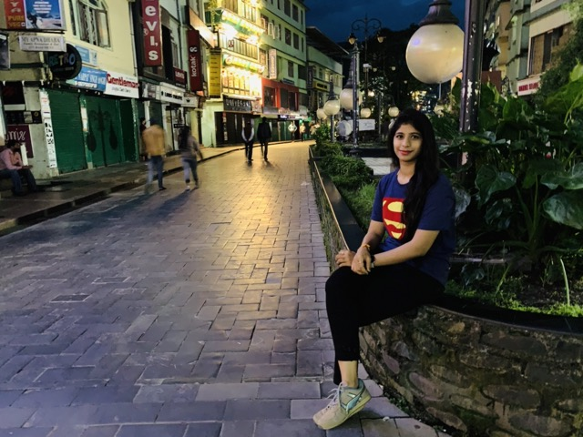
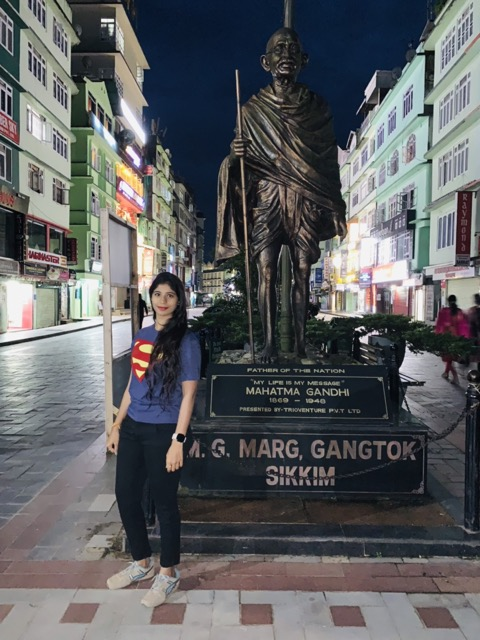
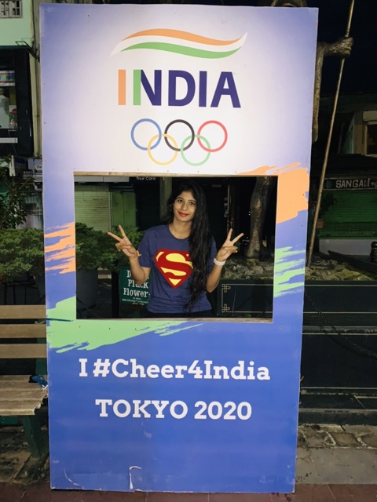
01 / 04
01 / 08
MG Marg after dark
First glimpse of Gangtok is often this clean pedestrian mall — lamps, shop signs, Gandhi in bronze, strangers walking without horns. The capital’s living room. I came back every night.
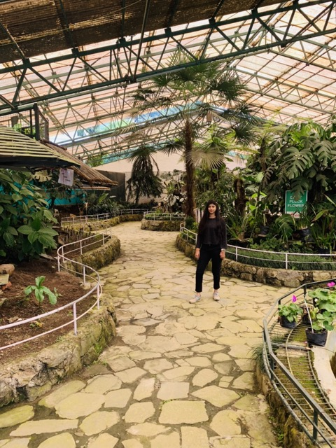
01 / 01
02 / 08
Flower house humidity
Cultural treasure in glass — ferns, palms, a “don’t pluck” sign, and Himalayan blooms when the season agrees. Soft contrast to the ridge wind outside.
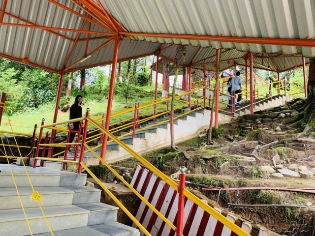
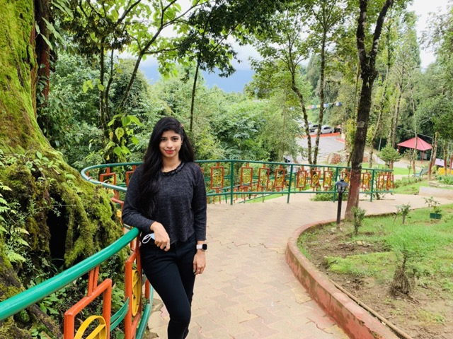
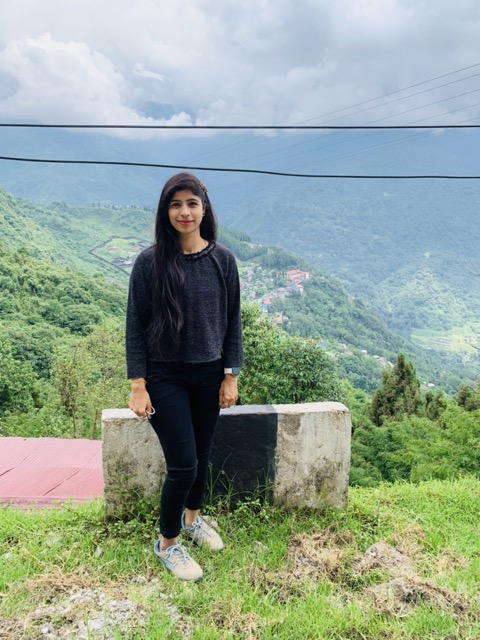
01 / 03
03 / 08
Paths, flags, overlooks
Covered stairs up green banks, mossy trees, prayer flags in the distance, a valley that drops forever. Local life is vertical. Hidden gems are often just one more flight of steps.
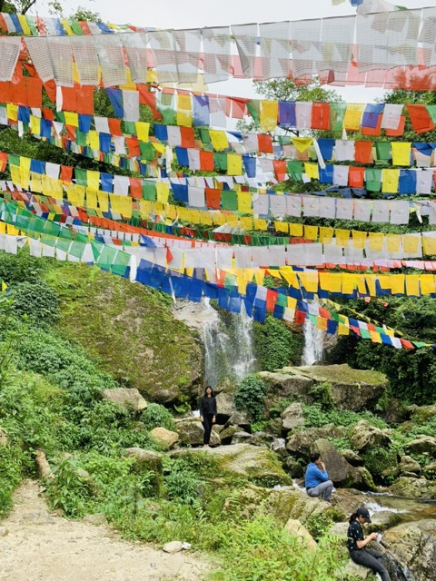
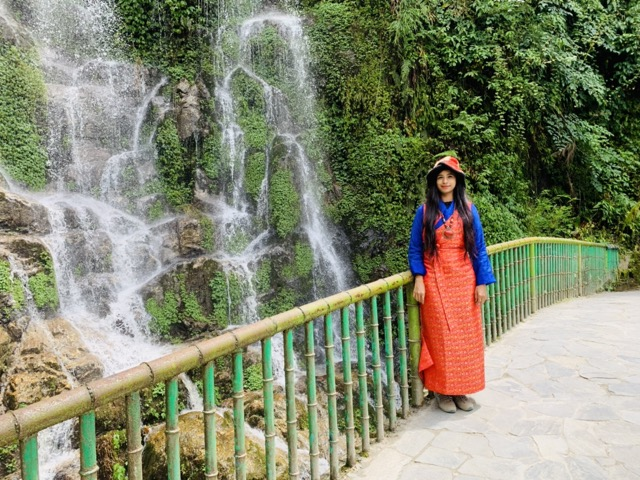
01 / 02
04 / 08
Waterfall under lungta
Unforgettable: spray, moss, and strings of prayer flags cutting the sky. Traditional dress for a photo, then cold hands again. Sikkim’s soft power is color against green stone.
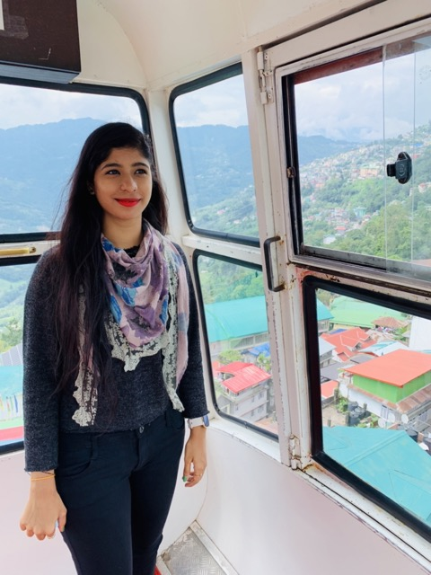
01 / 01
05 / 08
Ropeway over the roofs
A cabin window, colored tin roofs, ridges beyond. The town finally reads as a map. Farewell views started here long before the airport road.
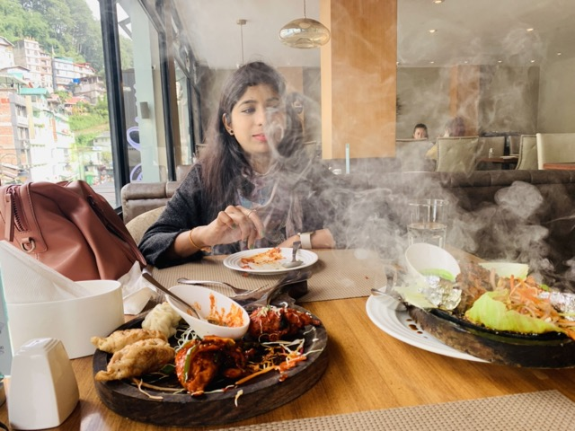
01 / 01
06 / 08
A plate with a view
Fried momos, a sizzling platter throwing steam, hillside buildings through the glass. Mountain hunger is specific — dumpling, spice, then another walk in the cold.
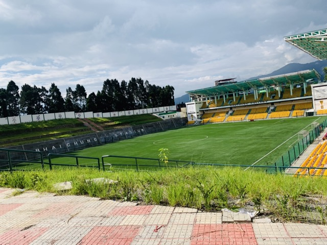
01 / 02
07 / 08
Namchi green, tea mist
Bhaichung Stadium’s yellow seats under cloud, then tea terraces swallowing a valley. Day-trip Sikkim — football pride and plantation fog on the same road.
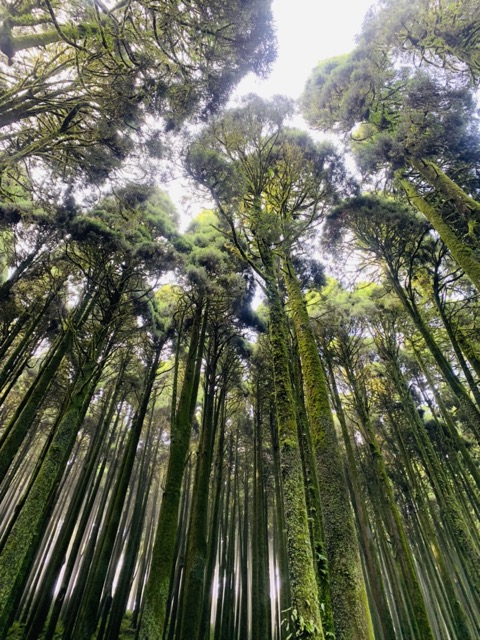
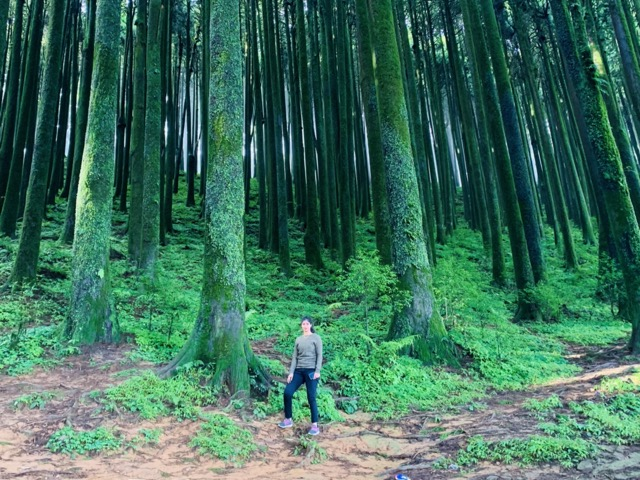
01 / 02
08 / 08
Moss forest vertical
Look up: trunks in green velvet, canopy closing the sky. The hills’ quieter frames — not a landmark with a ticket, just humidity and height.
Still on the list.
Five days filled MG Marg and the ropeway. These are the rooms and ridges I still owe Sikkim.
🙏 Rumtek, slower
I skimmed the monastery rhythm. A morning without a lake-clock running is unfinished.
Morning
🏞️ Tsomgo on a clear day
Weather stole the postcard once. A blue-sky lake day is still owed.
Day
🎭 A cultural show
I talked about Sikkimese dance more than I sat for it. One evening performance remains.
Night
🏔️ Higher permit country
Nathula and farther ridges when paperwork and season align. Not every trip earns the pass.
Permit day
If you have another day.
Tsomgo for the glacial lake, Rumtek for monastery quiet, or Namchi if you want stadium green and Samdruptse on a longer loop.
🏞️ Tsomgo Lake
Shared taxi packages, warm layers, yak photos. Confirm permits if your passport is not Indian.
Day · taxi
🙏 Rumtek Monastery
Half day outside town. Architecture, quiet halls, a different pace than MG Marg.
Half day
💦 Ban Jhakri Falls
Easy waterfall stop with prayer-flag energy. Soft day when altitude already taxed you.
Half day
🛕 Namchi loop
Samdruptse, Char Dham approaches, stadium green. Longer road day from Gangtok.